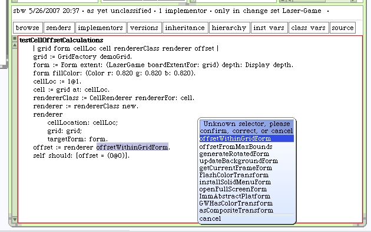
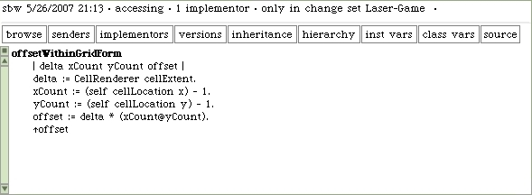
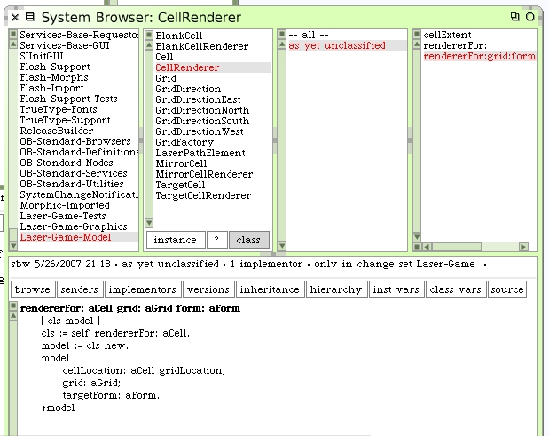
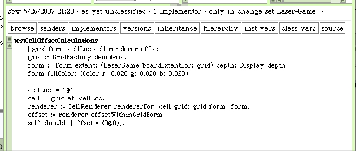
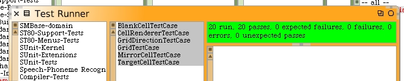
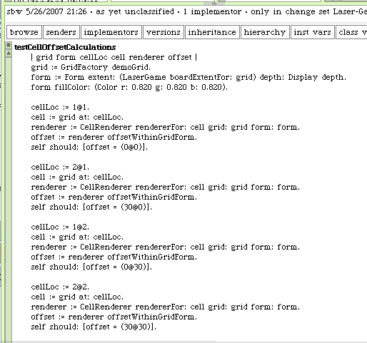

Back to the CellRendererTestCase and our unfinished #testCellOffsetCalculations method.
We can re-use a lot of our workspace code and test for the calculated offsets.
Squeak complains because we haven't written the method yet. Go ahead and confirm the new method name.
Here's the new instance method we need on our CellRenderer class.
We can simplify by making a new class method to answer our renderers.
Using this new method is more straight-forward.
Rerunning our test cases shows this test works.
But it's the simple case. We should enhance the unit test to check multiple cell locations.
